Префектура Киото · Киото · ремёсла
Kaikado: чайницы из Киото, которые закрываются сами
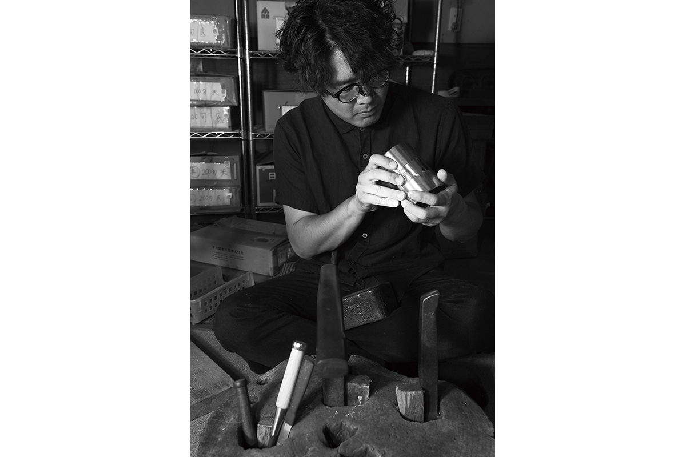
Крышка металлической чайницы Kaikado опускается сама, без нажима, и закрывается плотно, так что внутрь не проходит воздух. Киотская мастерская делает такие банки вручную с 1875 года, а шестой мастер рода сделал их известными далеко за пределами Японии.
Мастерская
Старейшие чайницы Японии
Чайный лист очень чувствителен: стоит измениться влажности или температуре, и меняется вкус. Чтобы чай оставался вкусным даже во влажной и жаркой Японии, его издавна хранили в металлических банках с плотной крышкой. Мастерскую Kaikado в Киото основали в 1875 году, и её считают старейшей из всех, что делают такие чайницы и сегодня.
В последние годы о старой мастерской заговорили и в Японии, и за границей. Перемены начались с Такахиро Яги, который стал шестым мастером рода.
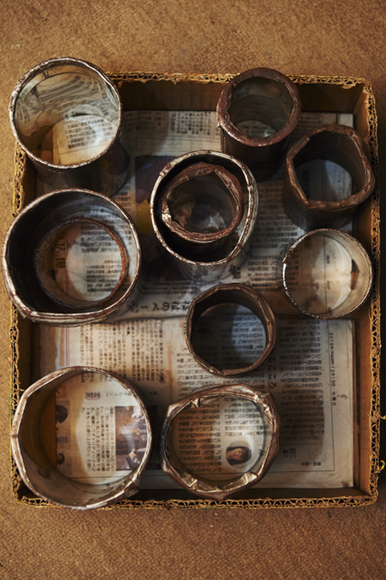
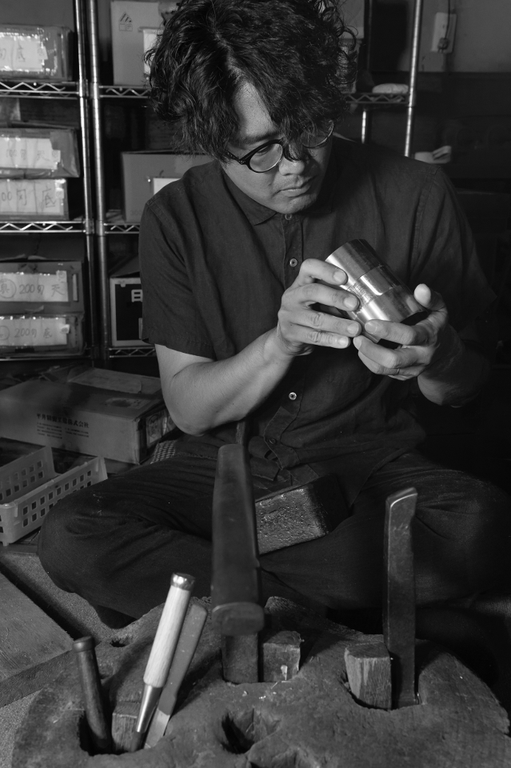
Путь
Из сувенирного магазина в Лондон
До того как вернуться в семейное дело, Яги работал в Kyoto Handicraft Center и продавал японские ремёсла иностранным туристам. Английский всегда давался ему легко: в университете он учился на английском отделении, а на прежней работе каждый день говорил с иностранцами. Мысль о продажах за границей пришла к нему после одного случая.
«Я видел, как иностранцы покупали чайницы, чтобы пользоваться ими дома. И подумал: значит, их можно продавать и за рубежом. Потом позвонили из Лондона, и я поехал туда продавать наши чайницы»
Такахиро Яги
Старинный способ изготовления он оставил без изменений, но стал выпускать банки для кофе, для пасты и для других нужд. Каждая новая вещь сохраняла достоинства ручной работы и при этом подходила к сегодняшней жизни.
Яги ездил на выставки в Нью-Йорк, Париж и другие города. Когда он сам показывал, как работает с банками, вокруг собирались люди и заводили разговор.
«Я понял на собственном опыте: если рассказывать не только о вещи, но и о мастере, который её сделал, отклик гораздо сильнее»
Такахиро Яги
По его словам, главное в мастерах не только красота отделки и твёрдая рука. Компьютер сегодня рисует новые формы одну за другой, станок отливает их без единого изъяна, и поэтому особенно важно показать, как серьёзно каждый мастер относится к своему делу и какой дух стоит за этой работой.
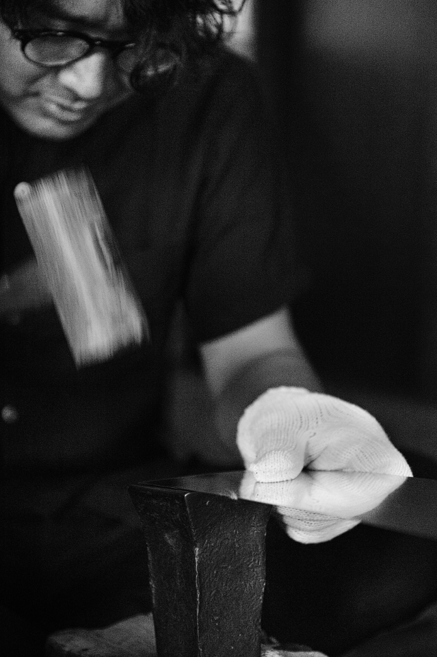
Процесс
Около 130 операций вручную
Чайницы Kaikado делают из цельного листа жести, латуни или меди. От листа до готовой банки около 130 операций, и все они ручные. Банка должна закрываться плотно, поэтому ошибка даже на толщину волоса недопустима.
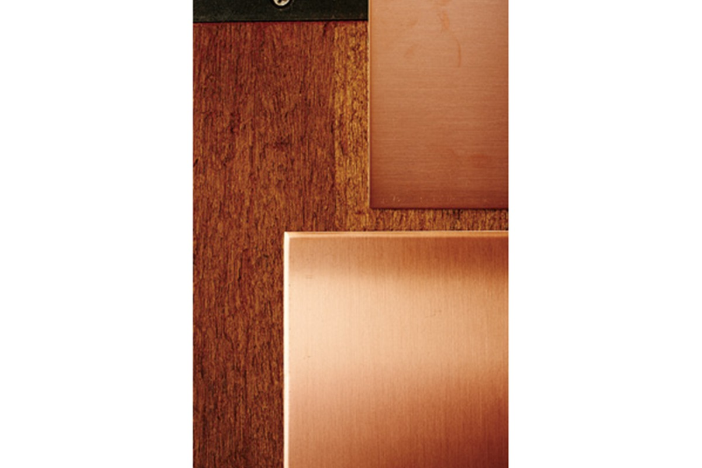
Сначала лист режут по размеру будущей банки. На вид это просто, но именно здесь важна точность до волоса. Потом край листа простукивают молотком, чтобы он стал гладким: бить нужно ритмично и ровно, и это одна из самых трудных операций. Затем лист аккуратно сворачивают на трёхвалковом станке и временно скрепляют самодельными зажимами, которые делают только для чайниц.
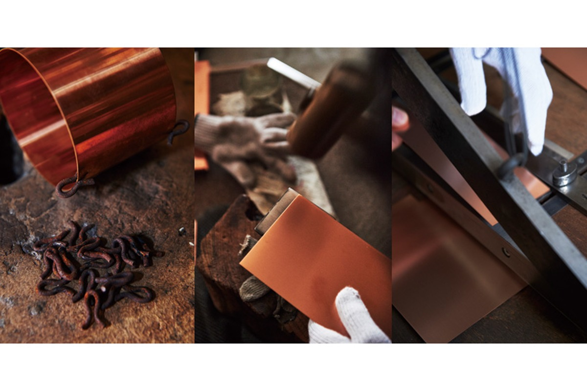
Вдоль шва посыпают флюс для пайки. «Работа мелкая и кропотливая, пока не привык, это была мука», смеётся Яги. Паяльники меняют в зависимости от диаметра банки и металла и паяют, нагревая их на огне. Перегреешь, и металл обгорит, поэтому всё решают время и точность. Последний шаг: край дна по кругу ровно простукивают деревянным молотком. От этой операции во многом зависит, насколько плотно закроется банка, а плотность и есть главная черта чайниц Kaikado.
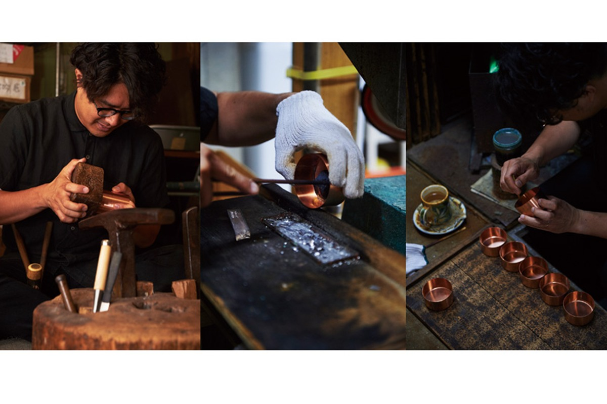
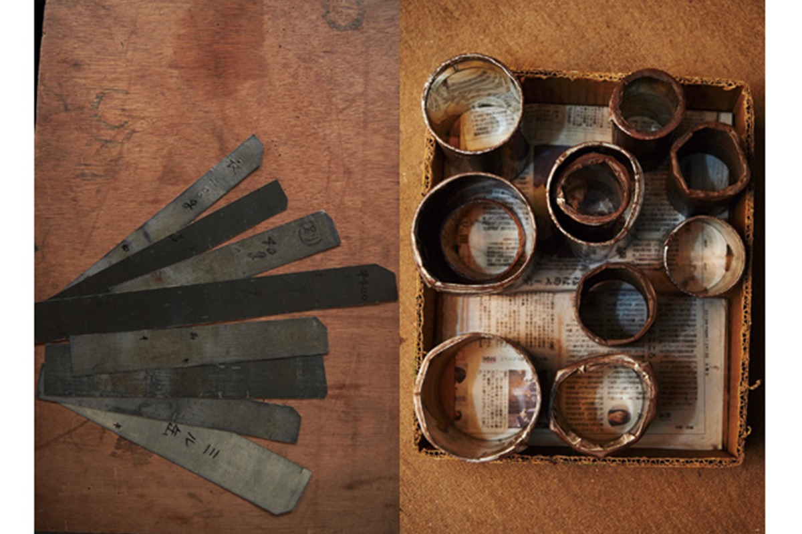
Семья
Мастерская как семейный портрет
Чувствовал ли Яги с детства груз старой фамильной вывески? Он отвечает, что нет.
«В Киото старых лавок, которые держат много поколений, не сосчитать. Среди горожан, на которых держится праздник Гион-мацури, полно домов с историей в несколько веков. Мы открылись в начале эпохи Мэйдзи, так что по здешним меркам мы новички из новичков. Скажешь, что ты шестое поколение, а тебе ответят: ну что ж, старайся»
Такахиро Яги
Семей мастеров по соседству было много, и ремеслом здесь никого не удивишь. Мастерская была прямо в доме, с детства Яги помогал развозить готовые банки, и чайницы были просто жизнью его семьи.
«Приходишь из школы, а дед и отец, как всегда, делают чайницы. Для меня это была обычная жизнь. Мастера и были моей семьёй»
Такахиро Яги
Для него это привычно, но мастерство старейшей в Японии мастерской поражает. Особенно крышка.
«Крышка сама собой легко поднимается и, если её отпустить, сама плотно садится на место. Этого добиваются только чутьём. Я учусь уже 17 лет, но последнюю подгонку крышки до сих пор часто сверяю с отцом. Чем больше знаешь, тем больше хочется узнать. Наверное, в этом и есть прелесть ремесла»
Такахиро Яги
Мастерство переходило от поколения к поколению, а дело вокруг него менялось. При деде Kaikado понемногу поставляла чайницы чайным лавкам на западе Японии. При отце большие чайные компании наполняли их чаем и продавали как подарки. После 1990-х годов, как и многие, мастерская попала в полосу спада, когда вещи почти перестали покупать. Отец даже советовал сыну стать служащим: стабильная жизнь принесёт больше счастья.
«И всё же бросить то, среди чего я вырос, я не смог. Как люблю семью, так люблю и это ремесло, которое здесь сложилось»
Такахиро Яги
Изделия
Чайница для пасты и чайник из меди
На основе техники чайниц Kaikado выпускает самые разные вещи для сегодняшнего быта, и их охотно берут в подарок. Жестяная банка для пасты (маленькая, с мерой для пасты) стоила 19 440 иен с налогом в 2017 году, широкая чайница «Цугэ А» на 200 г стоила 21 600 иен, медный чайник Copper tea pot стоил 62 640 иен.
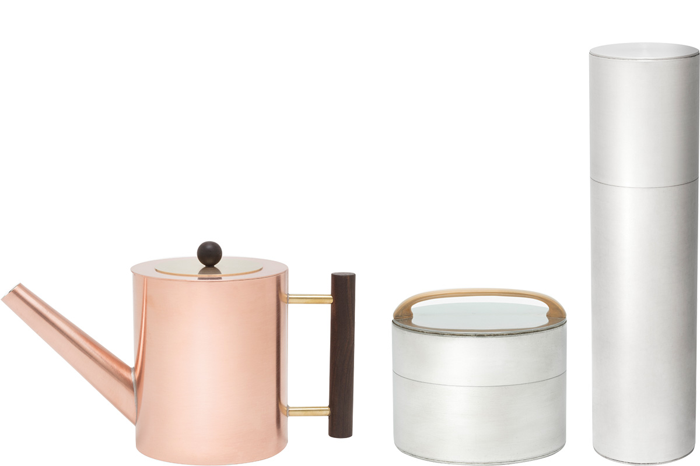
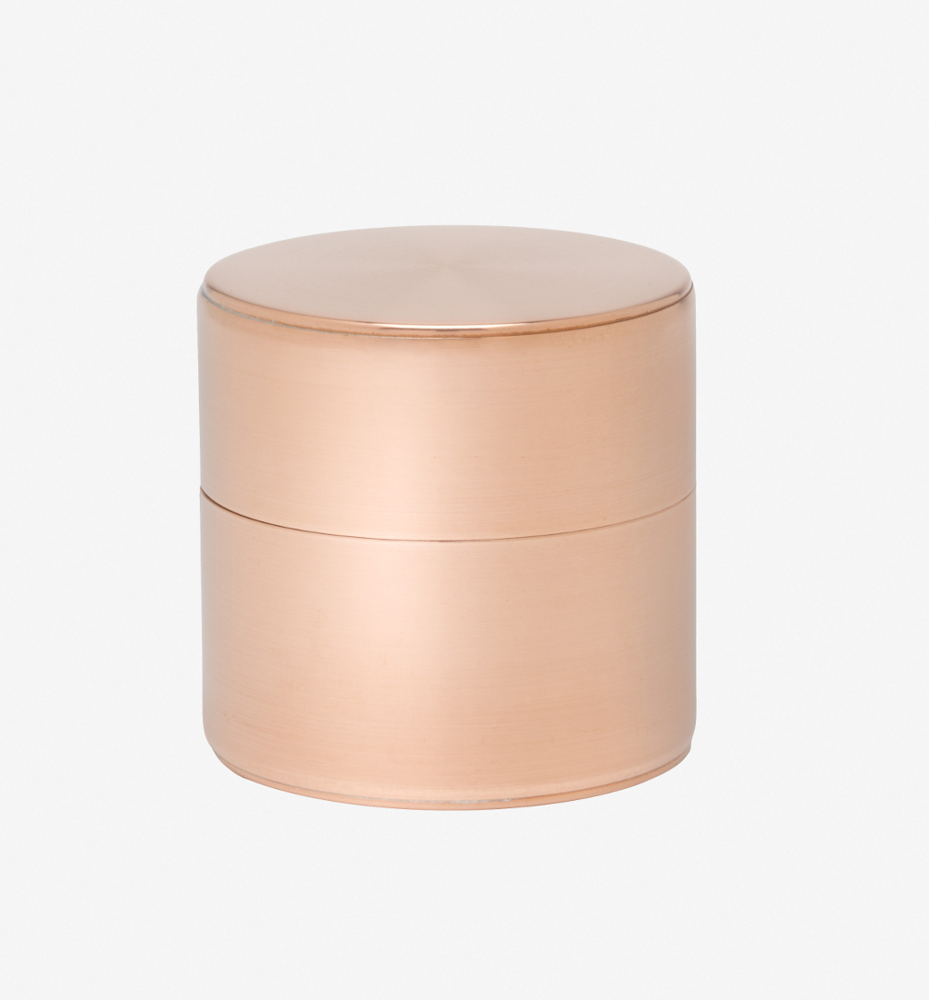
Вместе с Panasonic в рамках проекта GO ON мастерская превратила чайницу в компактную колонку «Кётцу». В 2017 году её показали на Миланской неделе дизайна, одной из крупнейших выставок дизайна в мире, и она получила приз за лучший рассказ о вещи.
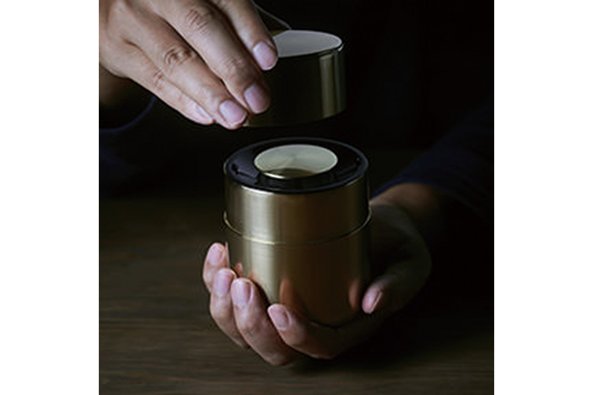
Встречи
Kaikado Café и проект GO ON
Яги хотел, чтобы тот, кто приезжает в Киото, мог ближе познакомиться с Kaikado. В мае 2016 года он открыл Kaikado Café в квартале Каварамати-Ситидзё, в нескольких минутах ходьбы от мастерской.
«Раньше с покупателями мы встречались только в маленьком магазине при мастерской. Хочется, чтобы здесь было видно, какие мы люди и какое тепло вкладываем в работу»
Такахиро Яги
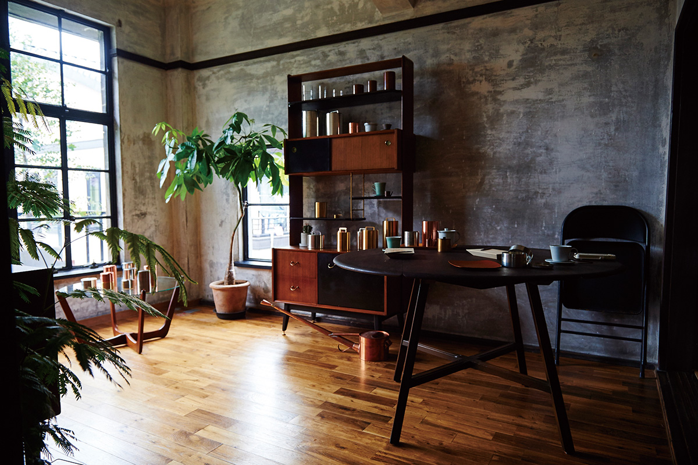
Вместе с пятью наследниками старых киотских мастерских, среди которых ткачи нисидзин-ори и мастера плетёной металлической сетки, Яги основал проект GO ON. Мастера делятся техникой и знанием материалов с компаниями и дизайнерами. GO ON работал с Panasonic, Leica, Franck Muller и другими известными марками и показал, что сложное ремесло понятно далеко за пределами своей области и своей культуры.
«Хотим заново увидеть, в чём наша сила, и искать самые разные пути для ремесла, не привязываясь к привычным представлениям»
Такахиро Яги
Следующей идеей Яги была собственная марка «K».
«Это проект, в котором молодые мастера сами делают вещи, а не чайницы. Цель не в новой форме, а в том, чтобы мастер ясно понимал, что он делает, и полностью отдавался работе. Хочу, чтобы они могли работать в том же духе и без вывески Kaikado»
Такахиро Яги
Яги не держится за традицию как за груз и смотрит вперёд. Похоже, именно эта свобода и откроет следующую главу в истории Kaikado.
Kaikado
- Адрес
- префектура Киото, Киото, район Симогё, Каварамати Рокудзё Хигаси-иру
- Телефон
- +81 75-351-5788
- Сайт
- kaikado.jp
Kaikado Café
- Адрес
- префектура Киото, Киото, район Симогё, Каварамати-дори Ситидзё Агару, Сумиёси-тё, 352
- Телефон
- +81 75-353-5668
- Часы работы
- в будни 8:00–16:00 (последний заказ 15:30), в субботу, воскресенье и праздники 8:00–17:00 (последний заказ 16:30)
- Выходные
- по календарю на сайте
- Сайт
- kaikado-cafe.jp
Фото: Кадзума Такигава, Коити Масукава.